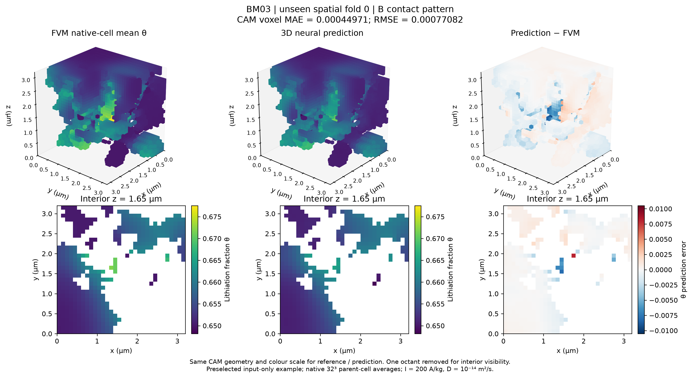

3D concentration-field learning
Direct prediction of three-dimensional lithiation fields from archived finite-volume simulations.

| Stored dataset | Count |
|---|---|
| Simulation samples | 4461 |
| Unique geometries / ROIs | 345 |
| Contact maps | 1949 |
| Geometry collisions across splits | 0 |
Result scope
Displayed results are two preselected examples from a recorded first-fold checkpoint, not aggregate generalisation scores. Full cross-validation was incomplete in this local record. Targets are native 32³ parent-cell means, not full fine-grid 64³ fields.